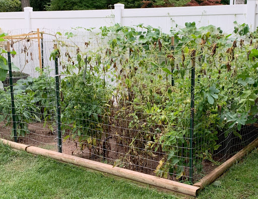
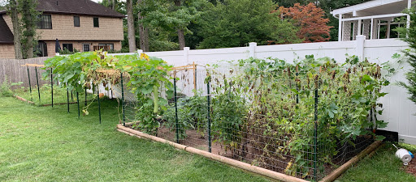
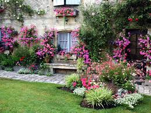
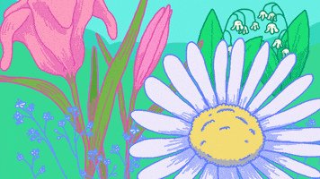
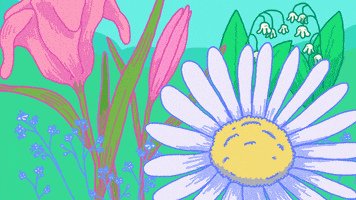

Home Page
Gardening
One thing that my family and I have been able to do since we've moved to a new house is gardening. However, while it was winter/fall and it was colder, we weren't
able to do much.Now that it is warmer outside, we were able to garden a lot more. We have a lot of plants in our garden, including:
- Snakeguard/Longuard
- Tomatoes
- Mint
- Peppers/Chilis


And a lot more. While I don't really help around with the garden a lot, it's still amazing to watch all the plants grow. We also eat food cooked from the vegetables
we grow (of course) which really brings it into perspective.
Gardening doesn't really have to be a summer activity, you technically do it year-round (If you're taking care of plants that last long). However, near the spring/summer
time you are able to harvest them, but you also have to be careful because there are always little critters who want those crops for themselves! >:D

 
